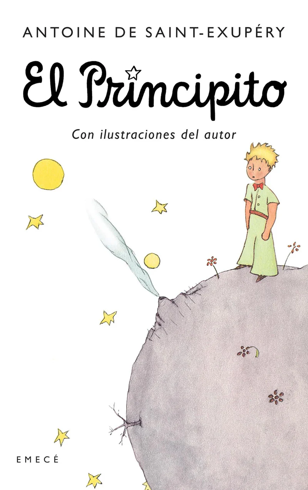
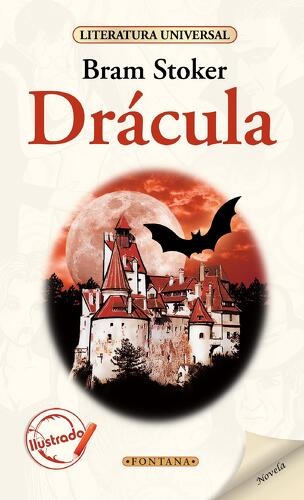
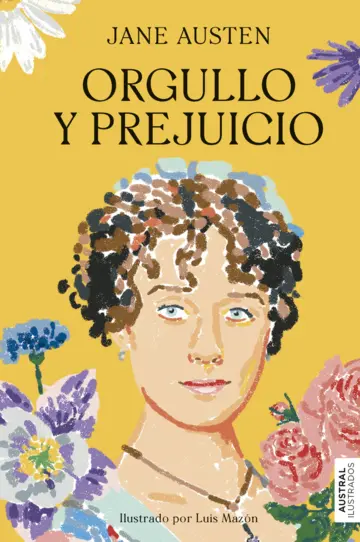
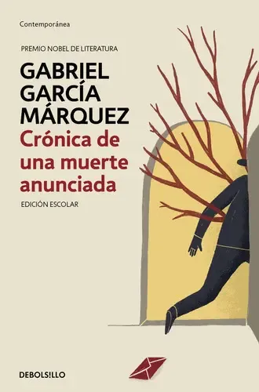

El Principito es una célebre novela corta francesa de Antoine de Saint-Exupéry que narra el viaje de un niño viajero espacial (el Principito) desde el asteroide B-612 hasta la Tierra. A través de encuentros con peculiares personajes, el relato explora el amor, la amistad y la crítica a la superficialidad de los adultos.
Leer más
Drácula (1897) de Bram Stoker es una novela gótica epistolar que narra el intento del conde vampiro de Transilvania por trasladarse a Inglaterra para expandir su "imperio del mal". La obra define el mito moderno del vampiro: un ser inmortal, aristocrático y telépata con aversión a la luz solar, ajos y crucifijos.
Leer más
Orgullo y prejuicio (1813), de Jane Austen, es un clásico que narra la historia de Elizabeth Bennet, una joven inteligente e inconformista que, en la Inglaterra rural del siglo XIX, choca con el adinerado y altivo Fitzwilliam Darcy. A través de malentendidos, los protagonistas superan sus prejuicios y orgullo personal, encontrando el amor verdadero.
Leer más
"Crónica de una muerte anunciada" (1981), de Gabriel García Márquez, es una novela corta que reconstruye, con estilo periodístico y fatalista, el asesinato de Santiago Nasar a manos de los gemelos Vicario. El pueblo conoce las intenciones de los hermanos, quienes buscan vengar el honor familiar tras la deshonra de su hermana Ángela, pero nadie impide el crimen.
Leer más
Fahrenheit 451 (1953) de Ray Bradbury es una novela distópica que presenta un futuro donde los libros están prohibidos y los bomberos queman cualquier material de lectura para censurar el pensamiento crítico. La trama sigue a Guy Montag, un bombero que, tras conocer a una joven, comienza a cuestionar su sociedad vacía y su labor, convirtiéndose en un perseguido.
Leer másLos Juegos del Hambre es una novela distópica de Suzanne Collins sobre Katniss Everdeen, una joven de 16 años que sustituye a su hermana en un brutal torneo televisado a muerte. En el país de Panem, el Capitolio obliga a sus 12 distritos a enviar jóvenes a luchar como castigo, convirtiendo la supervivencia en un acto de rebeldía.
Leer más